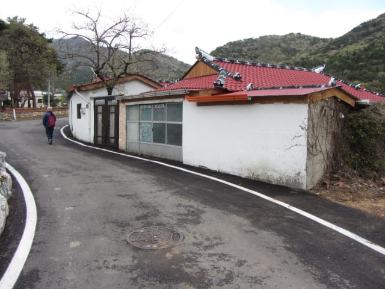
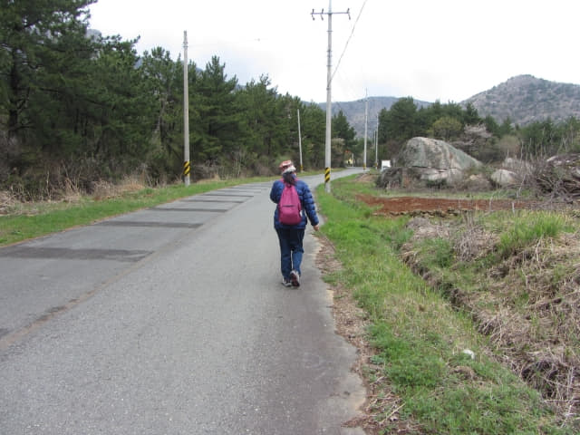

因大雨關係, 延遲到早上九時四十五分才出發, 匆匆走到南海公用客運站, 登上了早上十時五十分開出的巴士, 沿途交通非常暢通, 於早上十一時二十二分抵達「신보탄」巴士站, 也是離南海錦山菩提庵登山口 (錦山第二登山口)最近的巴士站。
我們原本的計劃是從錦山第一登山口攀登上錦山菩提庵, 從錦山第二登山路線下山, 然後步行往尚州銀沙海灘, 這樣的路線比較順, 不用走回頭路, 可惜因天雨出發遲了三個多鐘頭, 唯有改為登山和下山都是路線較短的錦山第二登山口。

望望地圖, 雖說「신보탄」巴士站是離錦山菩提庵登山口最近的巴士站, 但距離也頗遠的, 不過路線十分簡單, 沿村落中的小路一直走便是, 不會迷路的。
Okay! 出發步行往錦山菩提庵登山口!
走過馬路, 循巴士站旁的小路向上走。
遠眺錦山菩提庵
沿小路一直走, 前面遠處好像一座屏風的山巒便是南海錦山, 嶙峋巨岩兀突於最高的山頂上, 錦山菩提庵就建在巨岩之中, 十分險要, 我們現在就是攀登上山頂的錦山菩提庵。路程看似很遠, 但只要一步一步向前, 始終會達到的。
穿過村莊, 已經聽到四處傳來狗吠聲, 還是拿著樹枝走比較安全。
村落的環境真不錯, 風景十分優美, 很享受這一段路。
繼續沿村落中的道路走。


經過一個名叫「스마일펜션」的地方。對「펜션」這兩個韓文有點認識, 最近在那裡看過呢…….? 呀! 想起了, 三天前步行往「寶城大韓茶園．第二茶園」的途中也經過一間名叫「꽃들펜션」的地方, 當時還懷疑是否老人院?
繼續沿村落中的道路向前走。

突然間, 一道陽光灑落南海錦山高聳的山峰上, 發出閃閃光光斑, 漂亮極了, 好像引領我們往那裡。看清楚山頂上的嶙峋巨岩, 有點美國西部的感覺。
沿途的洋蔥菜田。
經過一個好像寺廟的地方 —「천지암」。
繼續向前走。

回頭望望剛才走過的鄉間小路。
繼續向前走, 迎面是一條馬路。按地圖所示, 錦山菩提庵登山口就在前面不遠處。
接著沿馬路繼續向前走。
哈哈~~ 終於看到往南海錦山 (남해 금산 Namhae Geumsan Mountain) 的路標, 在前面的路口轉右便是了!


馬路對面有一間旅客咨詢中心, 但好像沒有開門。
慶尚南道．南海郡 南海錦山菩提庵登山口
再往前走幾步, 終於來到南海錦山菩提庵登山口, 接著我們會從這裡攀登上錦山山頂上的南海錦山菩提。


{kind=link}
{kind=link}